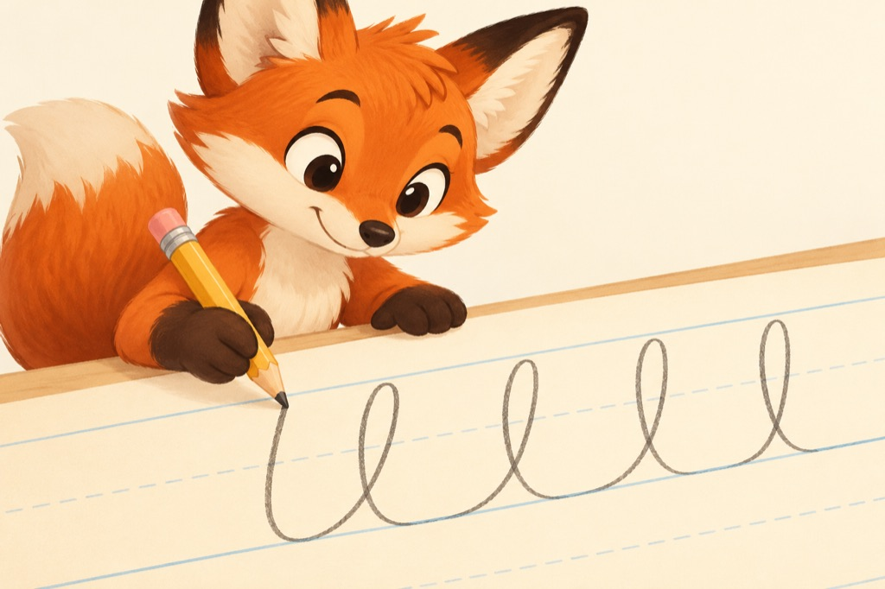
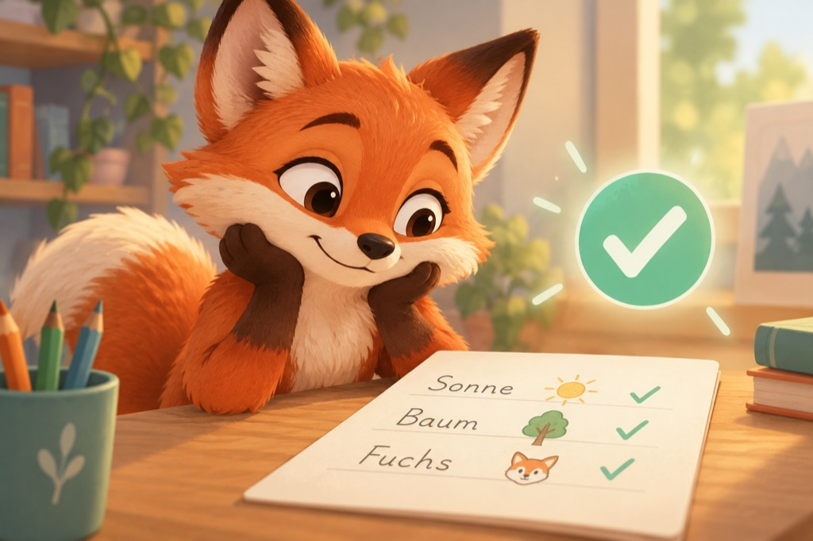
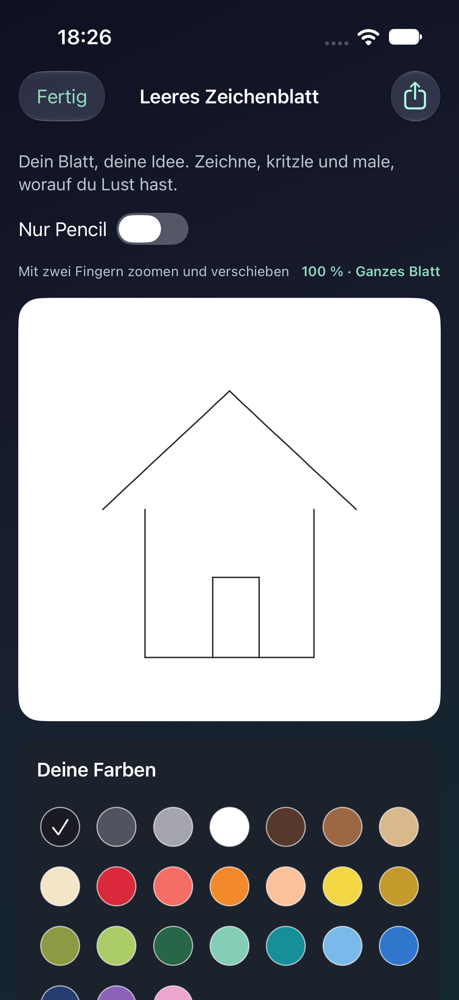
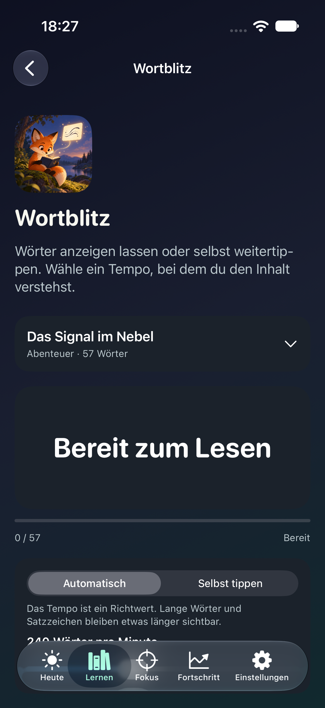

Eigene Zeichenwelten
Elf Punktebilder und ein freies Blatt. Leicht anfangen, bis auf 600 % zoomen und mit Farben gestalten. Mehrere Blätter desselben Motivs unabhängig benennen, kopieren und Profilen zuordnen.
Zeichnen · Schreiben · Lernen · Fokus
Fokusfuchs verbindet kreative Zeichenblätter, Handschrift, Lernspiele und bewusste Konzentration. Auf iPhone und iPad, mit Apple Pencil, Finger oder Papier. Die hier gezeigten Funktionen gehören zu Version 2.1. Die Verfügbarkeit im App Store folgt nach Apples Freigabe.

Neu in Version 2.1
Wähle Umfang, Stufe und Hilfen so, wie es heute für dich passt.
Elf Punktebilder und ein freies Blatt. Leicht anfangen, bis auf 600 % zoomen und mit Farben gestalten. Mehrere Blätter desselben Motivs unabhängig benennen, kopieren und Profilen zuordnen.

Drei Druckschrift-Stile, einzelne Buchstaben, kurze Wörter und ganze deutsche Sätze. Mit Apple Pencil oder Finger schreiben; A4-Vorlagen und elf Zusatzblätter als PDF teilen oder drucken.

Handschrift erhält Hinweise zur Vorlage statt einer Prozentnote. Vor dem Verlassen kannst du die eigene Seite exportieren. Datum, Titel und Schriftstil abgeschlossener Seiten bleiben im lokalen Verlauf.

16 deutsche Geschichten und Sachtexte im Wortblitz. Ausdrücklich starten, selbst weitertippen, zurückgehen und vollständig nachlesen. Freiwillige Verständnisfragen ohne zusätzliche XP.
Kurze Alphabet-Runden, Kalendernachbarn und Merkfolgen. Einmaleins mit Lernreihen und gezielter Fehlerwiederholung; Uhrzeiten mit eigener Stunden- und Minutenwahl.
Regelwechsel, Musterpfad, Buchstabenjagd, Detaildetektiv und Rückwärtsrechnen. Dazu geführte Übungen und ein Drei-Atemzüge-Reset mit drei selbst bestätigten Schritten.
Direkt aus der App
Originalaufnahmen von Fokusfuchs 2.1. Die Übungen und eigenen Daten bleiben auf deinem Gerät.




Dein persönlicher Weg
Lokale Ranglisten trennen Umfang, Variante und Hilfen. Wortblitz hat keine neue Zeitrangliste; angezeigte Wörter sind kein gemessener Leseerfolg.
Eigene Profile, Tagesziele und Fortschritt. Freiwillige Vorschläge nutzen nur deine eigene Übungshistorie und ändern die Stufe erst nach deiner Auswahl.
Ohne Konto, Werbung oder Analyse-Tracking. Profile, Texte, Verständnisantworten und Zeichenblätter bleiben lokal. Die Profilzuordnung ist eine Ordnungshilfe, keine Zugangssperre.
Antworten zu Zeichenblättern, Schreibseiten, PDF und Übungen.
Zum Support →Welche Daten lokal gespeichert werden und wie du sie löschst.
Datenschutz lesen →Fokusfuchs ist eine Übungs-App, kein Medizinprodukt. Sie stellt keine Diagnosen und ersetzt keine medizinische oder therapeutische Beratung.